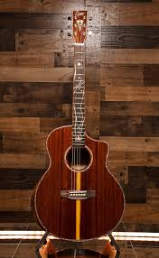

Sitka Spruce
The standard for acoustic tops. It provides a broad dynamic range and crisp articulation, perfect for everything from light fingerpicking to heavy strumming.

Rosewood
Primarily used for backs and sides, Rosewood is prized for its rich, complex overtones and deep bass response that acoustic players love.